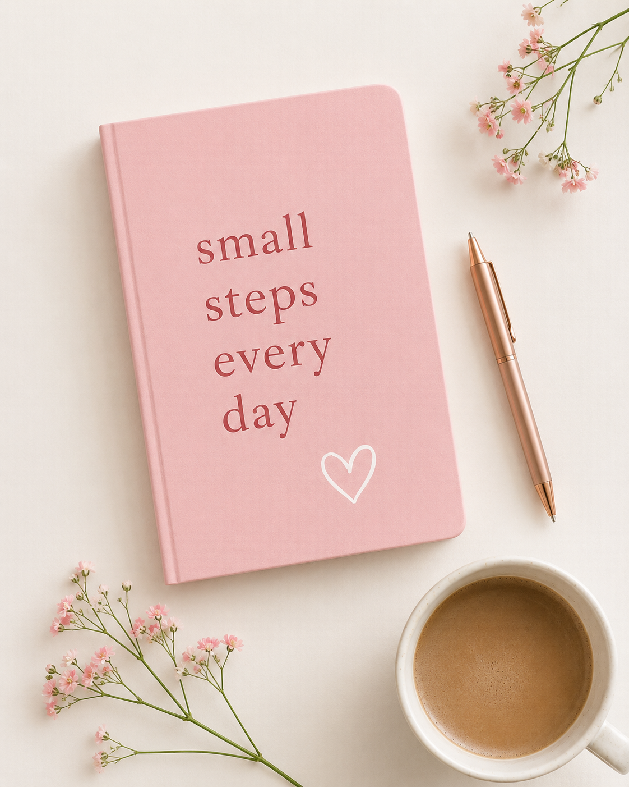
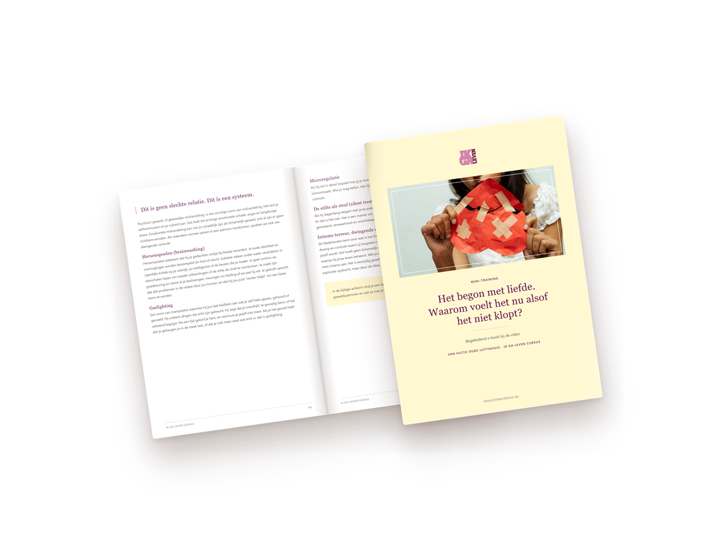
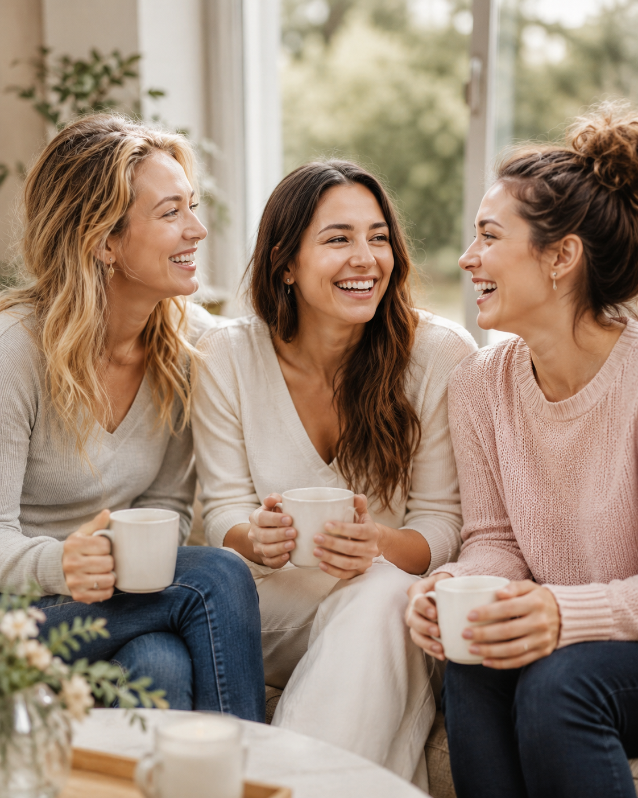

Download het e-book
Alles uit de video, plus de voorbeelden, om terug te lezen wanneer jij wilt. Direct te downloaden, zonder e-mailadres.
Naar de pdf →Gratis video · 12 minuten
Twijfel je over wat er in je relatie aan de hand is? In twaalf minuten laat ik je zien hoe het komt dat het zo verwarrend voelt. Kijk wanneer het jou uitkomt.
Wil je alles op je eigen tempo teruglezen? Het e-book bij deze video download je hier direct. Geen e-mailadres nodig.
Download het e-book (pdf) ↓

Alles uit de video, plus de voorbeelden, om terug te lezen wanneer jij wilt. Direct te downloaden, zonder e-mailadres.
Naar de pdf →
Meerdere data in juli en augustus, twee uur via Zoom, gratis. In een besloten groep vrouwen; je hoeft niets uit te leggen.
Meld je aan →
IK GA LEVEN is de 10-weekse cursus waarin je de regie over je leven terugbouwt, in een kleine groep.
Naar de cursus →